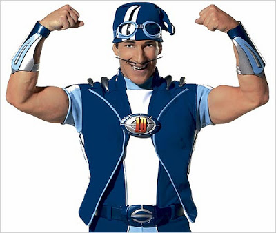
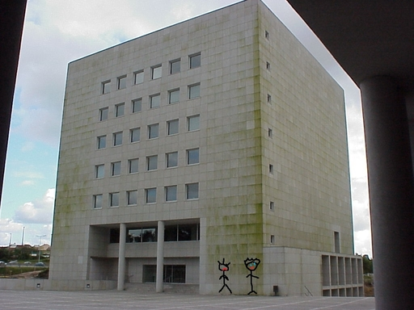

O famoso jogador João Félix teve o seu valor acrescido durante este verão. A diretoria do clube do jogador afirma que o jovem deve agora rondar os 896 milhões de euros, devido às suas qualidades de streamer agora descobertas.
Política
Que grande A(ventura)
Os mais recentes resultados das eleições presidenciais acusam uma percentagem de votos de 0.23% para André Ventura, que foi completamente apanhado de surpresa pela mais recente candidata (que obteve os restantes 99.77%), Cristina Ferreira.
Saúde
This..Is..SPARTOVID!!!
É com muita pena que informamos que o famoso habitante da Vila Moleza, Sportacus, testou positivo para o novo vírus, Covid-19. Rápidas melhoras!

Sociedade
Um crime imperdoável...
Esta tarde foram apanhados em flagrante dois alunos da FEUP a trabalharem juntos atrás da biblioteca. Acontece que ambos tinham número de estudante ímpar, o que contradiz as novas regras. A diretoria da FEUP, já informada da situação, está a tomar medidas para castigar este comportamento. Não se sabe ao certo as possíveis consequências, mas o diretor chegou a referir a pena de morte numa entrevista à CNTV.

FIM
Autor do Jornal: Paulo Ribeiro (Paulinho), up201806505